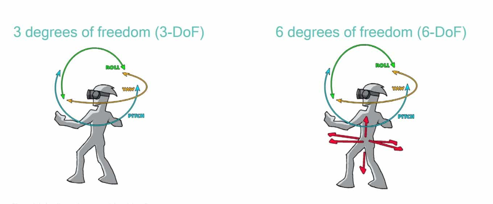
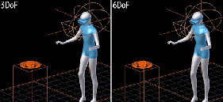
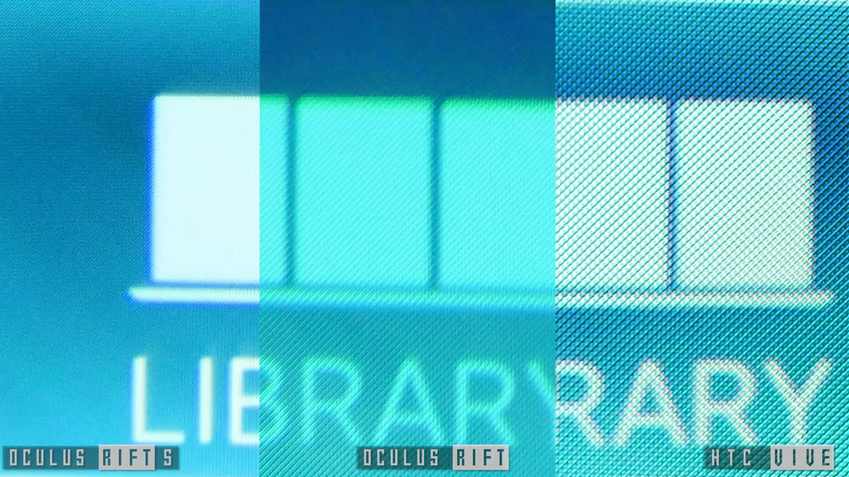
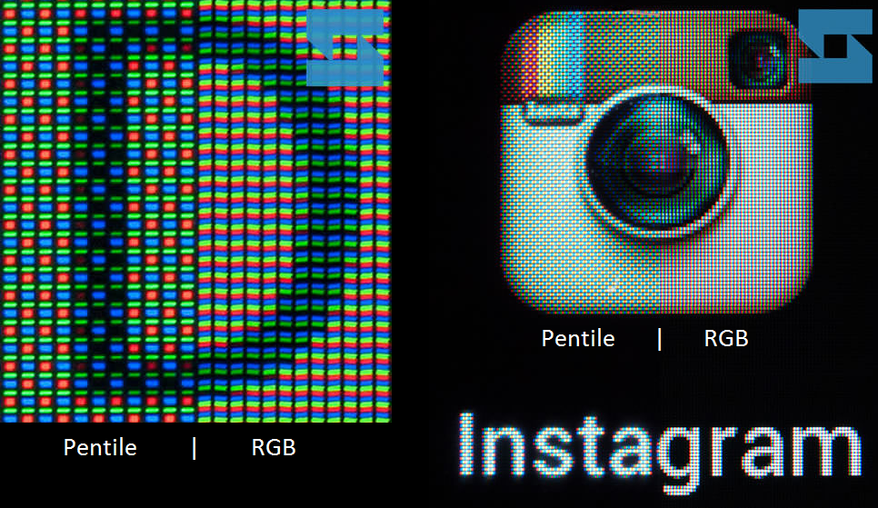
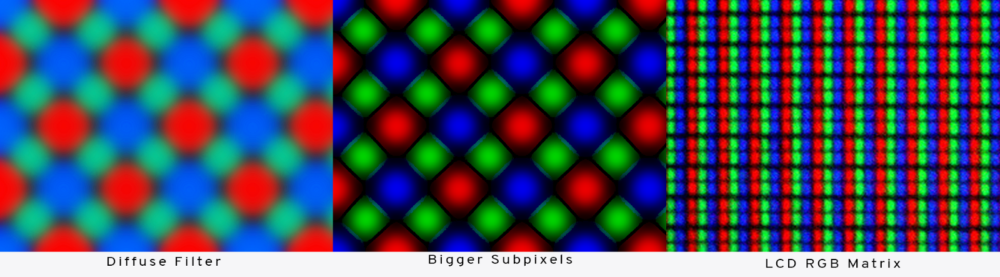
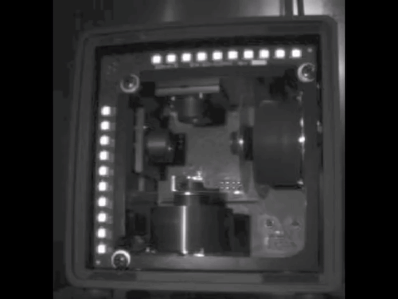
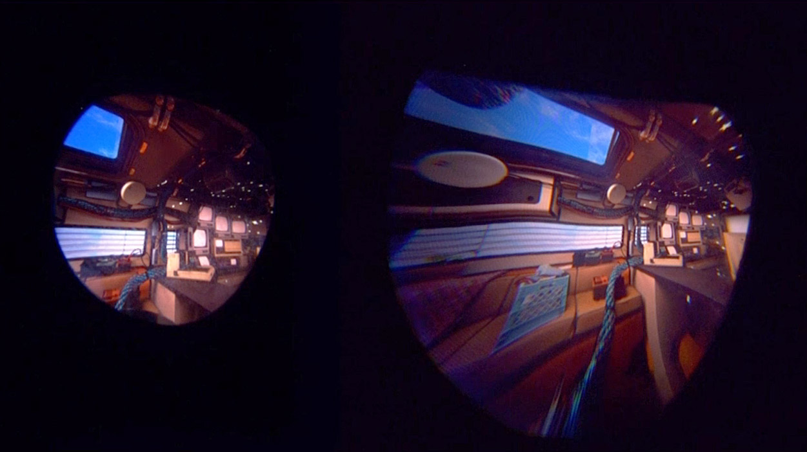
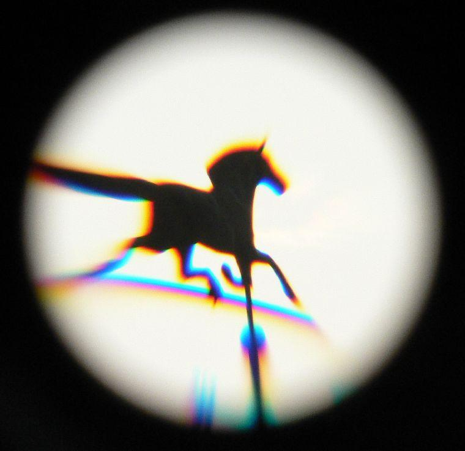
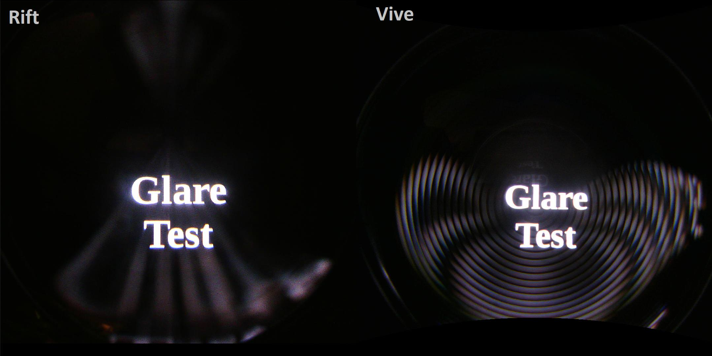
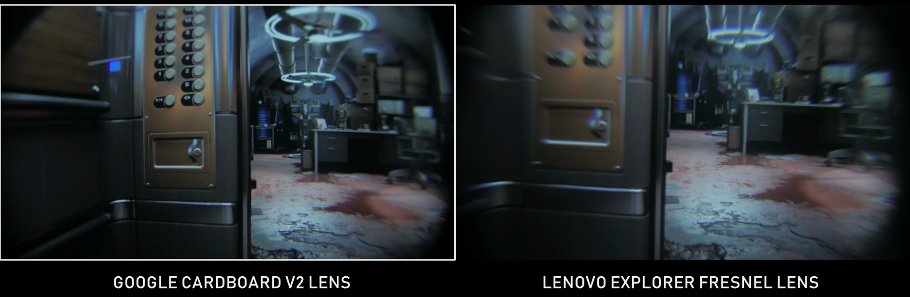

Esta es una guía / introducción a la Realidad virtual, en la que explicaré cómo funciona la tecnología, qué visores existen, cuáles comprar, ventajas etc...
Aunque en general podemos dividirlo en 2 categorías (aunque realmente sean 3)
Son las siguientes : PCVR y Stand Alone
Vale, así que primero vamos a ver qué se necesita para "esto de la VR" y por qué debería importarte y luego hablaré de PCVR ya que es lo principal y después de los Stand Alone, después de eso reviews de HMDs.
Características de la Realidad Virtual
¿Qué es un HMD?
Un HMD es lo que la gente suele entender por "visor de realidad virtual", consiste en unas pantallas pegadas a nuestros ojos junto a unas lentes para no tener que enfocar a pocos centímetros y una serie de giroscopios y sensores.
¿Qué puedo hacer con esto?
Esta es la parte divertida, con la Realidad Virtual puedes hacer... De todo.
Desde ver películas como si estuvieses en el cine con una pantalla gigantesca pero desde tu casa, estar en algún mundo de fantasía, usarla para ver un modelo de tu casa en construcción y ver cómo podría quedar todo, ser un astronauta en la estación espacial internacional, pilotar y conducir aviones y coches, hablar con personas de cualquier parte del mundo, ver películas con amigos que no viven cerca tuya... Todo es posible.
Glosario
3DOF y 6DOF
Esto quiere decir sobre cuántos ejes se puede mover nuestra cabeza o mandos, DOF significa "Degrees Of Freedom", un visor o dispositivo 3 DOF solo se puede mover en 3 ejes espaciales ya que solo tiene un sensor (giroscopio) y no es capaz de moverse en un espacio tridimensional, es como estar quieto pero poder mover la cabeza para mirar arriba o abajo.
En cambio con 6 DOF puedes mirar hacia todos los lados y mover tu cabeza arriba, abajo o hacia detrás.
 SDE y la resolución
Screen Door Effect o SDE, es el efecto que sucede cuando tienes una pantalla a muy poca distancia, ves los subpíxeles y el espacio entre estos, es como estar viendo a través de una mosquitera, este es uno de los mayores problemas de la VR junto a la densidad de píxeles de las pantallas, aunque las pantallas que monten los HMDs tengan resoluciones de alrededor de 1400 píxeles sigue habiendo un problema grave con la resolución, una persona a larga distancia (dependiendo del visor) se puede ver como un puñado de píxeles marrones a lo lejos.

Tipos de pantallas
En la VR el tipo de pantalla es muy importante por varios factores, primero, dependiendo del tipo podemos tener negros puros (OLED) o grisáceos (LCD C), además de que cada tipo de pantalla trae consigo su dosis de distorsiones varias, las LCD usan una matriz RGB y la OLED usa una "pentile" o en forma de diamante, por la forma en la que están colocadas en la OLED hay más espacio entre los subpíxeles y por ello más SDE o efecto rejilla
Además de todo esto es necesario que los visores trabajen a alrededor de 90 imágenes por segundo para tener claridad de imagen y que con el tiempo no resulte incómodo de llevar
 Tracking
El Tracking o seguimiento es lo que permite al visor moverse en 6DOF y no en 3DOF, es el posicionar el visor y mandos en un espacio tridimensional
Hay dos formas de hacerlo, Inside-out o por tracking externo, la idea es o bien tener unas cámaras o algún sistema para posicionar los dispositivos en el espacio (lighthouse y similares) o que esto se haga desde el propio visor.
El problema es que con el tracking externo debes poner sensores, y el Inside-out puede fallar y ser impreciso, además de tener oclusión.
FOV
El FOV o campo de visión es el área que eres capaz de ver, es como ver a través de unos prismáticos, normalmente son 85º aunque hay visores con mucho más.
Glare
Esperemos que lo último, el Glare o "rayos de dios" es, literalmente, un montón de rayos de luz que empiezan a venir de ningún sitio y iluminan la lente como si fuera una linterna, esto está provocado por las lentes, ya que para corregir unas deformaciones en la imagen... Añaden otras... Como el glare o las aberraciones cromáticas.
También está el "Punto dulce", que es lo que ves nitído y también el IPD, la distancia entre las pupilas, si las lentes no están justo encima de los ojos puedes ver extremadamente mal.
Existen otras deformaciones de imagen, pero esto no es muy común así que no lo pongo pero la imagen se puede doblar como un barril (combarse hacia adentro) y más.
  PCVR
¿Es cierto que necesitas un PC muy caro? Nope, ya hay hasta portátiles gaming de "gama baja" que pueden mover la VR sin demasiados problemas, por lo general el punto de partida de la VR es de... 700 euros, de hecho puedes jugar con un PC más barato, pero no lo recomiendo, con este PC vas bien para jugar a VR, y a cualquier juego, y ya de paso dejo el PC recomendado.
CPU : R5 1600 AF
GPU : GTX 1660
RAM : 12GB @ 3000Mhz CL15
PSU : BitFenix Formula 550w
Motherboard : MSI Tomahawk MAX
https://www.pccomponentes.com/configurador/243f2d7eF
CPU : R5 3600
GPU : RTX 2060
RAM : 16GB @ 3000Mhz CL15
PSU : BitFenix Formula 650w
Motherboard : MSI B450 Pro Carbon AC MAX
https://www.pccomponentes.com/configurador/25A6D8730
Ahora voy a explicar el por qué de esos componentes
CPU
En la VR la CPU es muy, MUY importante, la necesitamos porque...
A) Muchos juegos usan físicas en los objetos muy avanzadas, y ahora los juegos están dirigiendose a que todos los objetos estén basados en Físicas
B) Necesitamos producir +90 frames por segundo, esto normalmente no es un problema, pero con juegos mal optimizados (creeme, muchos, como The Forest), que abusan de las físicas (Boneworks) o si te vuelves loco instalando Mods (+180 mods en Skyrim VR, sé lo que es jugar a 15FPS) vas a desear tener una CPU potente.
GPU
Antes he dicho que necesitamos +90 frames por segundo, alguien necesita procesar esos frames, normalmente no supone un reto, se podría bajar hasta incluso una 1050ti, pero pasa lo de siempre, Skyrim con mods, Pavlov con mods, o VRCHAT, juego que abusa de la gráfica sin motivo aparente. En esto en concreto la RV es muy extraña, ya que algunos juegos sorprenden por lo extremadamente bien que funcionan (Half - life : Alyx parece uno de ellos) pero siempre hay un juego que por algún motivo que uno no logra entender tiene caídas de rendimiento abismales, y créeme, no quieres bajos FPS en VR, más de esto después.
El resto del sistema
Este punto se explica solo, necesitamos una fuente de calidad, por ello la BitFenix, fuente de extremadamente buena calidad que puede durarte tranquilamente 7 años. También necesitamos 12 o más GB de RAM, más que nada porque necesitamos ejecutar (drivers + home del visor) + SteamVR + Juego + Windows, y como quieras usar Revive es incluso peor. La placa base es muuuy buena, completamente sobredimensionada, en el futuro podríamos meter hasta un 3900x sin problemas.
Stand Alone
La segunda opción, estos visores no requiere de PC ni teléfono para funcionar, son completamente autónomos, sin cables, sensores, son portables etc...
Tienen la desventaja de que valen para ver películas y poco más, no suelen tener tracking en 3 dimensiones... Aunque para ver películas es de lo mejor que hay. Por lo genenal salvo una excepción no recomiendo los Stand Alone
Oculus Quest
Las Oculus Quest son un visor autónomo con 6DOF y dos controladores con tracking, todo esto propulsado por el Snapdragon 835 junto a unos poco impresionantes 4GB de RAM (compartida) y 64GB de almacenamiento, algo obsoleto para lo que cuesta, pero funciona bien.
Debo destacar que con un USB C de buena calidad puedes conectarlo al PC y usarlo, aunque en este caso es mejor usar unas Rift S, no solo por el tracking y el SDE, sino porque el cable USB C va a tener que ser muuy corto, unos 5 metros, que suena a mucho, pero no lo es tanto.
Ventajas
No necesitas PC, buena resolución, buenos negros, tracking / volúmen de tracking muy bueno y todas las ventajas que trae un visor que no necesita cables, y lo mejor, es portátil, puedes llevarlo a donde quieras cuando quieras y la instalación es extremadamente sencilla.
Desventajas
El visor pesa y tiene el peso mal repartido, por ello aprieta la cara y con el rato se hace bastante molesto, también tiene el grave problema de que su pantalla es de 72Hz, esto a algunas personas les molesta mucho con el rato ya que te cansa la vista y usa pantallas Oled con matriz Pentile, por lo cual tiene cierto SDE.
Resúmen
Si no tienes PC lo recomiendo mucho, es un visor con el que puedes jugar a un gran catálogo a un buen precio, pero en caso de que quieras jugar en PC recomiendo fuertemente las Rift S
| Resolución | Hz | SoC | RAM | ROM | FOV | Tracking | Pantalla |
|---|---|---|---|---|---|---|---|
| 1440 x 1600 (x2) | 72Hz | Snapdragon 835 | 4GB | 64GB-128GB | ~95º | Inside-out (x4) | Oled Pentile |
Windows Mixed Reality
Windows Mixed Reality es un estándar que sacó Microsoft para crear visores de Realidad Virtual, ellos crean un visor de referencia y el software y las empresas que quieran pueden usar ese estándar para desarrollar sus visores a bajo coste.
El problema con Windows Mixed Reality es... Bueno. ¿He dicho que era un estándar medianamente abierto a bajo costo no? Si, pues resulta que todo el mundo empezó a sacar visores, todos eran el visor de referencia con otra carcasa, por lo tanto el mercado se inundó de visores que no se diferencian entre sí, HP, Asus, Dell, Lenovo, Samsung... Hasta Fujitsu, una empresa que se dedica a fabricar pilas tiene su propio visor, y todos casi iguales, pero la guinda sobre el pastel es que casi todos estos tienen IPD fijo y unas lentes bastante mediocres, es decir, que o tienes el IPD, o no vas a poder ver nada.
Y últimamente Microsoft está abandonando todo esto de WMR, parece que va a salir un nuevo visor pero poco más, tienen a 3 personas trabajando en esto y ya.
Ventajas
Son unos visores muuuuuy baratos, han llegado a estar a 150 euros y la verdad, ofrecen una calidad de imagen bastante decente y para lo que valen merecen mucho la pena, y lo mejor, estos visores en su momento fueron "revolucionarios" porque el tracking se realiza desde el propio visor, nada de sensores, y eso atrajo a mucha gente.
Desventajas
¿Te acuerdas de eso del IPD fijo? ¿Y de las lentes de mala calidad? Bueno pues encima muchos de ellos pueden ser incómodos, llevan pantalla LCD C de muy mala calidad y por ello tienen unos negros muy malos y incluso tienen Ghosting, pero lo mejor es el tracking, tienen dos cámaras delante y ya, con eso puedes trackear los mandos cuando los tienes en la cara, pero cuando los tienes sueltos o hacia los lados no los trackea, por suerte tiene acelerómetros y es capaz de "adivinar" por dónde andan los controladores.
Pero la cosa no acaba ahí, los mandos son... No son incómodos, pero tampoco cómodos, tienen un tracking que a veces va bien y otras va muy mal, y este es el mayor problema, usa cámaras en blanco y negro a lo que parece 360p para todo el seguimiento, y por ello el propio visor a veces se mueve un poco, esto no sería un problema de no ser de que mi pared es blanca, con un armario blanco delante, entonces muchas veces pierdo el tracking o el visor se mueve sin motivo aparente.
Resúmen
Unos visores a un excelente precio con unas prestaciones aceptables, pero solo lo recomiendo a gente sin dinero, principalmente estudiantes.
| Resolución | Hz | FOV | Tracking | Pantalla |
|---|---|---|---|---|
| 1440 x 1440 (x2) | 60 - 90 Hz | ~90º | Inside-out (x2) | LCD C |
¿Dónde informarse?
Lo primero es que si quieres meterte en esto de la VR el inglés te va a venir muy bien, pero por lo general vé a por medios especializados en el tema, a páginas y personas dedicadas a esto porque en las webs comunes todavía hay "prejuicios" de la época en la que la VR nació.
Podemos dividir las distintas "fuentes" de noticias en dos:
Páginas web
Aquí solo hay una web en Español dedicada a la VR, y dos que recomiendo pero en Inglés:
Real o Virtual
Road to VR
Upload VR
Ahora, en materia de canales de YouTube hay más variedad, de nuevo solo uno en español que recomiende, pero muchos en Inglés, aquí la lista:
Alehandoro VR
Tyriel wood
MRTV
Eric for president
Virtual Reality Oasis
FAQ
¿La VR marea?
Respuesta corta : No
Respuesta media : Lo que te marea no es la VR, es el moverte estando quieto
Respuesta larga :
He leído que la calidad de imagen es muy mala, ¿es verdad?
Si, y no
Todos estos mitos de la RV vienen de los primeros años de esta, en esa época (2016) casi no habían juegos y los que habían eran poco más que prototipos, los visores eran exageradamente caros (HTC Vive / Oculus Rift CV1) y encima la calidad de imagen era muy, MUY mala, si sumas todo eso con lo de "los mareos en la VR" ya puedes ver cómo ha acabado la cosa.
Pero eso no es todo, la mayoría de la gente cree que la VR es un móvil pegado a unas gafas de cartón, cuando simple y sencillamente no es así, ni se acerca a un visor de verdad.
Pero en la actualidad los visores de media tienen casi el doble de densidad de píxeles, mejores lentes etc, la calidad ha aumentado salvajemente, pero mejor que lo veas por tí mismo.
¿Necesito un PC potente?
Bueno, una GTX 1660 es de las gráficas mas malas que tiene Nvidia, y el 1600 AF a 90 euros igual, yo no llamaría a eso un equipo "potente" así que no, no hace falta un PC potente.
No hay juegos
Half Life Alyx, Lone Echo, Lone echo 2, Stormland, Asgard wrath, Artika 1, red matter, After the fall, Beatsaber, Blade and sorcery, The forest, Untill you fall, wilson´s heart, In Death, Apex construct, Contractors, Onward, Pavlov, Project cars 2, Space junkies, Robo recall, Espire 1,Gorn, Vader Inmortal 1/2, Boneworks, The walking dead saints and sinners, the walking dead onslaught, Arizona shunshine, no man's sky, Job simulator, Hellsplit, Arena VR, Moss, Rec room, Orbus VR
Los juegos son aburridos
Este soy yo

Y este es el juego de VR más divertido que hay